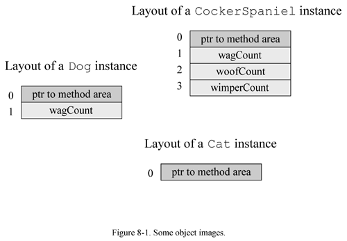
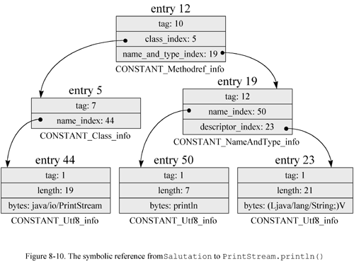

08 The Linking Model
- Dynamic Linking and Resolution
- Resolution and Dynamic Extension
- Constant Pool Resolution
- Compile-Time Resolution of Constants
- Direct References
- _quick Instructions
- Example: The Linking of the Salutation Application
- Example: The Dynamic Extension of the Greet Application
- Example: Unloading Unreachable Greeters
- On the CD-ROM
- The Resources Page
From the programmer's perspective, one of the most important aspects of Java's architecture to understand is the linking model. As mentioned in earlier chapters, Java's linking model allows you to design class loader objects that extend your application in custom ways at run-time. Through class loader objects, your application can load and dynamically link to classes and interfaces that were unknown or did not even exist when your application was compiled. note：java architecture --> one of the most important aspects --> linking model
The engine that drives Java's linking model is the process of resolution. The previous chapter described in detail all the various stages in the lifetime of a class, except for resolution. This chapter looks at resolution in depth, and shows how the process of resolution fits in with dynamic extension. It gives an overview of the linking model, explains constant pool resolution, describes method tables, shows how to write and use class loaders, and gives several examples. note：linking model --> engine --> the process of resolution
Dynamic Linking and Resolution
When you compile a Java program, you get a separate class file for each class or interface in your program. Although the individual class files may appear to be independent, they actually harbor symbolic connections to one another and to the class files of the Java API. When you run your program, the Java Virtual Machine loads your program's classes and interfaces and hooks them together in a process of dynamic linking. As your program runs, the Java Virtual Machine builds an internal web of interconnected classes and interfaces. note：dynamic linking
A class file keeps all its symbolic references in one place, the constant pool. Each class file has a constant pool, and each class or interface loaded by the Java Virtual Machine has an internal version of its constant pool. The internal constant pool is an implementation-specific data structure that maps to the constant pool in the class file. Thus, after a type is initially loaded, all the symbolic references from the type reside in the type's internal constant pool. note：runtime constant pool
At some point during the running of a program, if a particular symbolic reference is to be used, it must be resolved. Resolution is the process of finding the entity identified by the symbolic reference and replacing the symbolic reference with a direct reference. Because all symbolic references reside in the constant pool, this process is often called constant pool resolution. note：constant pool resolution
As described in Chapter 6, "The Java Class File," the constant pool is organized as a sequence of items.
Each item has a unique index, much like an array element.
A symbolic reference is one kind of item that may appear in the constant pool.
Java Virtual Machine instructions that use a symbolic reference specify the index in the constant pool where the symbolic reference resides.
For example, the getstatic opcode, which pushes the value of a static field onto the stack, is followed in the bytecode stream by an index into the constant pool.
The constant pool entry at the specified index, a CONSTANT_Fieldref_info entry, reveals the fully qualified name of the class in which the field resides,
and the name and type of the field.
note：the constant pool is organized as a sequence of items.
Keep in mind that the Java Virtual Machine contains a separate internal constant pool for each class and interface it loads. When an instruction refers to the fifth item in the constant pool, it is referring to the fifth item in the constant pool for the current class, the class that defined the method the Java Virtual Machine is currently executing. note：internal constant pool
Several instructions, from the same or different methods, may refer to the same constant pool entry, but each constant pool entry is resolved only once. After a symbolic reference has been resolved for one instruction, subsequent attempts to resolve it by other instructions take advantage of the hard work already done, and use the same direct reference resulting from the original resolution. note：each constant pool entry is resolved only once
Linking involves not only the replacement of symbolic references with direct ones, it also involves checking for correctness and permission.
As mentioned in Chapter 7, "The Lifetime of a Class," the checking of symbolic references for existence and access permission (one aspect of the full verification phase) is likely performed during resolution.
For example, when a Java Virtual Machine resolves a getstatic instruction to a field of another class,
the Java Virtual Machine checks to make sure that:
note：Linking involves not only the replacement of symbolic references with direct ones, it also involves checking for correctness and permission.
- The other class exists.
- This class has permission to access the other class.
- The named field exists in the other class.
- The field has the expected type (symbolic references to fields include the field type).
- This class has permission to access the field.
- That the field is really static--a class variable and not an instance variable.
If any of these checks fail, an error is thrown and resolution fails. Otherwise, the symbolic reference is replaced by the direct reference and resolution succeeds.
As described in Chapter 7, "The Lifetime of a Class,"
different implementations of the Java Virtual Machine are permitted to perform resolution at different times during the execution of a program.
An implementation may choose to link everything up front by following all symbolic references from the initial class,
then all symbolic references from subsequent classes,
until every symbolic reference has been resolved.
In this case, the application would be completely linked before its main() method was ever invoked.
This approach is called early resolution.
Alternatively, an implementation may choose to wait until the very last minute to resolve each symbolic reference.
In this case, the Java Virtual Machine would resolve a symbolic reference only when it is first used by the running program.
This approach is called late resolution.
Other implementations could choose a resolution strategy in-between these two extremes.
note：when to perform resolution? early resolution or late resolution
Although a Java Virtual Machine implementation has some freedom in choosing when to resolve symbolic references, every Java Virtual Machine must give the outward impression that it uses late resolution. No matter when a particular Java Virtual Machine performs its linking, it will always throw any error that results from attempting to resolve a symbolic reference at the point in the execution of the program where the symbolic reference was actually used for the first time. In this way, it will always appear to the user as if the linking were late. If a Java Virtual Machine does early linking, and during early linking discovers that a class file is missing, it won't report the class file missing by throwing the appropriate error until later in the program when something in that class file is actually used. If the class is never used by the program, the error will never be thrown. note：every Java Virtual Machine must give the outward impression that it uses late resolution
Resolution and Dynamic Extension
In addition to simply linking types at run-time, Java applications can decide at run-time which types to link. Java's architecture allows Java programs to be dynamically extended, the process of deciding at run-time other types to use, loading them, and using them. You can dynamically extend a Java application by creating a class loader object and using it to load types that are not part of your original application, but are determined by your running application. An example of dynamic extension is a Java-capable web browser loading class files for applets from across a network. When the browser starts, it doesn't know what class files it will be loading across the network.
To dynamically extend a Java application, you must include a class loader as part of your application.
To create your own class loader, you write a subclass of java.lang.ClassLoader and implement the loadClass() method.
When the loadClass() method of a class loader successfully loads a type,
it returns a java.lang.Class object to represent the newly loaded (and optionally, verified, prepared, resolved, and initialized ) type.
Here's the declaration of the loadClass() method:
note：class loader
begin // A method declared in class java.lang.ClassLoader: protected abstract Class loadClass(String name, boolean resolve) throws ClassNotFoundException; end
The class loader takes care of loading, linking, and initializing types.
Admittedly the name ClassLoader might lead you to believe it is responsible only for loading, and not linking or initialization,
but the name ClassLoaderLinkerAndInitializer is a bit unwieldy.
Also, the purpose of creating your own class loader is to customize the load phase while still using the primordial link and initialization mechanisms.
Class loaders differ not in how they link or initialize types, but in how they load types.
In other words, class loaders distinguish themselves by the manner in which they produce a binary form for a type given a fully qualified name.
note：class loader = loading + linking + initializing. Class loaders differ not in how they link or initialize types, but in how they load types.
The loadClass() method encompasses all three steps of loading, linking, and initialization of a new type.
You pass the fully qualified name of the requested type to loadClass() in the parameter name.
If you want linking and initialization to be performed at this time, you pass true in the parameter resolve.
If loadClass() is invoked with resolve set to false, it will load but not link and initialize the type.
From your programs, you will likely invoke loadClass() with the resolve parameter always set to true.
Normally, the loadClass() method is invoked with the resolve parameter set to false only by the virtual machine itself.
(More on this later in this chapter.)
note：loadClass(String name, boolean resolve)
As mentioned in earlier chapters, each class loader--primordial or object--is awarded its own name space, which is populated by the names of the types it has loaded. Dynamic extension and name spaces are both supported by one aspect of the process of resolution: the way a virtual machine chooses a class loader when it resolves a symbolic reference to a type.
When the resolution of a constant pool entry requires loading a type, the virtual machine uses the same class loader that loaded the referencing type to load the referenced type.
For example, imagine a Cat class refers via a symbolic reference in its constant pool to a type named Mouse.
Assume Cat was loaded by a class loader object.
When the virtual machine resolves the reference to Mouse, it checks to see if Mouse has been loaded into the name space to which Cat belongs.
(It checks to see if the class loader that loaded Cat has previously loaded a type named Mouse.)
If not, the virtual machine requests Mouse from the same class loader that loaded Cat.
This is true even if a class named Mouse had previously been loaded into a different name space.
When a symbolic reference from a type loaded by the primordial class loader is resolved, the Java Virtual Machine uses the primordial class loader to load the referenced type.
When a symbolic reference from a type loaded by a class loader object is resolved, the Java Virtual Machine uses the same class loader object to load the referenced type.
note：the virtual machine uses the same class loader that loaded the referencing type to load the referenced type
Constant Pool Resolution
This section describes the details of resolving each type of constant pool entry, including the errors that may be thrown during resolution.
If an error is thrown during resolution, the error is seen as being thrown by the instruction that refers to the constant pool entry being resolved.
Besides the errors described here, individual instructions that trigger the resolution of a constant pool entry may cause other errors to be thrown.
For example, getstatic causes a CONSTANT_Fieldref_info entry to be resolved.
If the entry is resolved successfully, the virtual machine performs one additional check: it makes sure the field is actually static (a class variable and not an instance variable).
If the field is not static, the virtual machine throws an error.
Any extra errors that may be thrown during resolution besides those described in this section are described for each individual instruction in Appendix A.
Resolution of CONSTANT_Class_info Entries
Of all the types of constant pool entries, the most complicated to resolve is CONSTANT_Class_info.
This type of entry is used to represent symbolic references to classes (including array classes) and interfaces.
Several instructions, such as new and anewarray, refer directly to CONSTANT_Class_info entries.
Other instructions, such as putfield or invokevirtual, refer indirectly to CONSTANT_Class_info entries through other types of entry.
For example, the putfield instruction refers to a CONSTANT_Fieldref_info entry.
The class_index item of a CONSTANT_Fieldref_info gives the constant pool index of a CONSTANT_Class_info entry.
note：the most complicated to resolve is CONSTANT_Class_info
The details of resolving a CONSTANT_Class_info entry vary depending on
whether or not the type is an array and whether the referencing type (the one that contains in its constant pool the CONSTANT_Class_info entry being resolved) was loaded via the primordial class loader or a class loader object.
note：第一个考虑的问题，是不是array类型；第二个考虑的问题，是由primordial class loader，还是由a class loader object来执行加载工作。
Array Classes
A CONSTANT_Class_info entry refers to an array class
if its name_index refers to a CONSTANT_Utf8_info string that begins with a left bracket, as in " [I."
As described in Chapter 6, "The Java Class File," internal array names contain one left bracket for each dimension, followed by an element type.
If the element type begins with an " L," as in " Ljava/lang/Integer;," the array is an array of references.
Otherwise, the element type is a primitive type, such as "I" for int or "D" for double, and the array is an array of primitive types.
note：array class = array of references + array of primitive type
In the case of an array of references, the virtual machine resolves the element type.
For example, if resolving an array class with the name " [[Ljava/lang/Integer;,"
the virtual machine would make certain class java.lang.Integer is loaded, linked, and initialized.
note：array of references
The end product of the resolution of a symbolic reference to an array class is a Class instance that represents the array class.
If a Class instance has already been created for the array type being resolved, that same Class instance is used.
Otherwise, the virtual machine creates a new Class instance to represent the newly resolved array type.
note：the end product of the resolution of a symbolic reference to an array class
Non-Array Classes and Interfaces
A CONSTANT_Class_info entry
whose name_index refers to a CONSTANT_Utf8_info string that doesn't begin with a left bracket
is a symbolic reference to non-array class or an interface.
Resolution of this kind of symbolic reference is a multiple step process.
note：multiple step process
The Java Virtual Machine performs the same basic steps, described below as Steps 1 and 2a through 2e,
to resolve any symbolic reference (any CONSTANT_Class_info entry) to a non-array class or interface.
In Step 1, the type is loaded.
In Steps 2a through 2e, the type is linked and initialized.
The precise way in which the virtual machine performs these steps depends on whether the referencing type was loaded via the primordial class loader or a class loader object.
note：primordial class loader or a class loader object
Step 1. Load the Type and any Superclasses
Resolution of a non-array class or interface begins by making sure the type is loaded into the current name space.
If the virtual machine determines that the referenced type hasn't yet been loaded into the current name space, it passes the fully qualified name of the type to a class loader.
The class loader loads the type, parses the binary data into internal data structures, and creates a Class instance.
note：class file --> class loader --> parse binary data --> internal data structures --> create a Class instance
Once the referenced type is loaded in, the virtual machine can peer into its binary data.
If the type is a class and not java.lang.Object, the virtual machine determines from the class's data the fully qualified name of the class's direct superclass.
The virtual machine then checks to see if the superclass has been loaded into the current name space.
If not, it loads the superclass.
Once that class comes in, the virtual machine can again peer into its binary data to find its superclass.
This process repeats all the way up to Object.
note：load the superclass --> ...... --> java.lang.Object
Through Step 1, the Java Virtual Machine makes sure a type is loaded, and if the type is a class, that all its superclasses are loaded. During this step, these types are not linked and initialized--just loaded. note：just loaded
If the referencing type (the one that contains in its constant pool the CONSTANT_Class_info entry being resolved) was loaded through the primordial class loader,
the virtual machine uses the primordial class loader to load the referenced type (and its superclasses, if any).
Otherwise, the referencing type was loaded through a class loader object, and the virtual machine uses the same class loader object to load the referenced type.
note：the same class loader
The Java Virtual Machine maintains a list of the names of all the types already loaded by each class loader.
Each of these lists forms a name space inside the Java Virtual Machine.
The virtual machine uses this list during resolution to determine whether a class has already been loaded by a particular class loader.
If during resolution, the Java Virtual Machine encounters a symbolic reference to a class that was not previously loaded by the appropriate class loader,
that class loader will be asked to load the class.
If the appropriate class loader is a class loader object, the Java Virtual Machine will make the load request by invoking the class loader object's loadClass() method.
On the other hand, if the Java Virtual Machine encounters a symbolic reference to a class previously loaded by the same class loader object,
the class loader object will not be asked to load it again.
Instead, the class previously loaded will automatically be used again.
This helps ensure that only one class with a given name is loaded by a particular class loader.
note：class loader --> name space --> load only once
If the referencing type was loaded via the primordial class loader, the virtual machine will check the primordial class loader's name space to see if the class was already loaded. If not, the virtual machine will use the primordial class loader to load the referenced type in an implementation-dependent way. If the referenced type is a class, the virtual machine will make sure all the class's superclasses are loaded as well. If any of these classes haven't yet been loaded into the primordial loader's name space, the virtual machine will use the primordial class loader to load those classes. note：primordial class loader
If the referencing type was loaded via a class loader object,
the virtual machine invokes loadClass() on the class loader object that loaded the referencing type,
passing in parameter name the fully qualified name of the referenced type and setting the resolve flag to true.
When loadClass() returns, it will have performed both Step 1 (loading) and Steps 2a through 2e (linking and initialization).
(It will perform Steps 2a through 2e because the resolve flag is set to true.)
Nonetheless, the loadClass() method will perform Step 1 completely before embarking on Steps 2a through 2e.
When a class loader object's loadClass() method is invoked, it has two ways to do its job.
One way is to use the primordial class loader by invoking findSystemClass().
In this case, the primordial loader will load, link, and initialize the requested type.
Alternatively, loadClass() can produce the binary data in its own custom way,
then call defineClass() and--if true was passed in loadClass()'s resolve parameter--call resolveClass().
In this case, the class loader object would produce the binary form for the requested type in its own custom way,
then used the primordial class loader's standard mechanism to link and initialize the type.
Here are the declarations for findSystemClass(), defineClass(), and resolveClass():
note：two way. One way is to use the primordial class loader
begin // Three methods declared in class java.lang.ClassLoader: protected final Class findSystemClass(String name) throws ClassNotFoundException; protected final Class defineClass(String name, byte data[], int offset, int length); protected final void resolveClass(Class c); end
If the loadClass() method invokes findSystemClass(),
the class loader object is in effect asking the virtual machine to use the primordial loader to resolve the reference completely.
The findSystemClass() method accepts the fully qualified name of the type to resolve in its name parameter.
If the primordial class loader is able to successfully resolve the reference, it returns a reference to a Class instance that represents the referenced type.
The loadClass() method would then just return a reference to the same Class instance.
If the primordial class loader is unsuccessful, however, findSystemClass() will complete abruptly by throwing a ClassNotFoundException.
In this case, the loadClass() method can either throw ClassNotFoundException itself or attempt to load the type in its custom way.
Types brought in through the primordial class loader via findSystemClass() are marked as having no class loader object.
Any types they refer to will be requested directly from the primordial class loader.
note：primordial class loader
If the loadClass() method produces the stream of binary data for the type in its own custom way (such as if it downloads the type's class file across a network),
it must invoke defineClass(), passing a reference to a byte array containing the type's binary data in the Java class file format.
note：loadClass() --> stream of binary data --> defineClass()
Invoking defineClass() will cause the virtual machine to do two things.
First, the virtual machine will parse the binary data into internal data structures and create a Class instance to represent the type.
Second, if the type is a class and not java.lang.Object, the virtual machine will retrieve the name of the class's direct superclass.
It will then check to see if the direct superclass has been previously loaded by this class loader object (the one whose loadClass() method just invoked defineClass() ).
This is a check to see if the direct superclass already resides in the current name space.
If the direct superclass has already been loaded by this class loader object, the defineClass() method returns the Class instance for the freshly loaded type.
Otherwise, the virtual machine invokes loadClass() on the same class loader object,
passing the fully qualified name of the direct superclass in the name parameter and setting the resolve flag to false.
Because the resolve flag is false, the direct superclass (and recursively, all its superclasses) will be loaded, but not linked or initialized.
note：defineClass() to two things. first, parse binary data and create a Class instance; second, load superclass.
The reason the resolve flag is set to false when loadClass() is invoked by defineClass() is because this is Step 1: loading of the type and any superclasses.
Linking and initialization, which would occur if resolve were set to true, is saved for Step 2.
When defineClass() has made certain the type and all its superclasses, if any, have been loaded into the current name space.
It returns the new Class instance that represents the type. Step 1 is then complete.
During Step 1, the virtual machine may throw the following errors:
- If the binary data can't be produced (for example, if a class file of the appropriate name can't be found), the virtual machine throws
NoClassDefFoundError. - If the binary data is produced, but isn't of the proper structure or a recognized version (such as if the minor or major version number of a Java class file is too high), the virtual machine throws
NoClassDefFoundError. - If the binary data is produced and well formed, but doesn't contain the sought after class or interface (such as if file
CuteKitty.classis discovered to contain classHungryTigerinstead ofCuteKitty), the virtual machine throwsNoClassDefFoundError. - If the class doesn't contain a superclass and isn't class
Objectitself, the virtual machine throws aClassFormatError. (Note that this check has to be done here, during the loading step, because that one piece of information--the symbolic reference to the superclass--is needed by the virtual machine during this step. During Step 1, the virtual machine must load in all the superclasses recursively.) - If a class appears as its own superclass, the virtual machine throws
ClassCircularityError.
Step 2. Link and Initialize the Type and any Superclasses
At this point, the type being referred to by the CONSTANT_Class_info entry being resolved has been loaded, but not linked or initialized.
In addition, if the type being resolved is a class, all its superclasses have been loaded, but not necessarily linked or initialized.
Some of the superclasses may be initialized at this point, because they may have been initialized during earlier resolutions.
note: the type has been loaded, but not linked or initialized
As described in Chapter 7, "The Lifetime of a Class," superclasses must be initialized before subclasses.
If the virtual machine is resolving a reference to a class (not an interface),
it must make sure that the superclasses have been initialized, starting with Object and proceeding down the inheritance hierarchy to the referenced class.
(Note that this is the opposite order in which they were loaded in Step 1.)
If a type hasn't yet been linked, it must be linked before it is initialized.
note: superclasses must be initialized before subclasses. If a type hasn't yet been linked, it must be linked before it is initialized.
Step 2a. Verify the Type
Step 2 begins with the official verification phase of linking, described in Chapter 7, "The Lifetime of a Class." As mentioned in Chapter 7, the process of verification may require that the virtual machine load new types. For example, when verifying a type, the Java Virtual Machine must check all a type's superclasses and superinterfaces to make sure they are all binary compatible with the type. If the type being verified has superinterfaces, they may not yet be loaded. During Step 1, the virtual machine makes sure all the type's superclasses are loaded, but not its superinterfaces. Thus, verification may require that a type's superinterfaces be loaded. At this point, the superinterfaces would be loaded and possibly linked, but definitely not initialized. note: verification may require that a type's superinterfaces be loaded
In addition, when verifying bytecodes, the Java Virtual Machine may need to load types to ensure the bytecodes are adhering to the semantics of the Java language. For example, if a reference to an instance of a particular class is assigned to a variable with a declared type of a different class, the virtual machine would have to load both types to make sure one is a subclass of the other. As with the superinterfaces described above, these classes would at this point be loaded and possibly linked, but definitely not initialized. note: verify bytecodes --> ensure semantics
If during the verification process the Java Virtual Machine uncovers trouble, it throws VerifyError.
Step 2b. Prepare the Type
After the official verification phase is complete, the type must be prepared.
As described in Chapter 7, "The Lifetime of a Class,"
during preparation the virtual machine allocates memory for class variables and implementation-dependent data structures such as method tables.
If the virtual machine discovers during this step that a class that is not declared abstract contains an abstract method, the virtual machine throws AbstractMethodError.
note: during preparation the virtual machine allocates memory for class variables and implementation-dependent data structures such as method tables
Optional Step 2c. Resolve the Type
At this point, the type has been loaded, verified and prepared.
As described in Chapter 7, "The Lifetime of a Class," a Java Virtual Machine implementation may optionally resolve the type at this point.
Keep in mind that at this stage in the resolution process,
Steps 1, 2a, and 2b have been performed on a referenced type to resolve a CONSTANT_Class_info entry in the constant pool of a referencing type.
Step 2c is the resolution of symbolic references contained in the referencing type, not the referenced type.
note: Step 2c is the resolution of symbolic references contained in the referencing type, not the referenced type.
For example, if the virtual machine is resolving a symbolic reference from class Cat to class Mouse,
the virtual machine performs Steps 1, 2a, and 2b on class Mouse.
At this stage of resolving the symbolic reference to Mouse contained in the constant pool of Cat,
the virtual machine could optionally (as Step 2c) resolve all the symbolic references contained in the constant pool for Mouse.
If Mouse's constant pool contains a symbolic reference to class Cheese,
for example, the virtual machine could load and optionally link (but not initialize) Cheese at this time.
The virtual machine mustn't attempt initialize Cheese here because Cheese is not being actively used.
(Of course, Cheese may in fact have already been actively used elsewhere, so it could have been already be loaded into this name space, linked, and initialized.)
note: for example
As mentioned earlier in this chapter, if an implementation does perform Step 2c at this point in the resolution process (early resolution),
it must not report any errors until the symbolic references are actually used by the running program.
For example, if during the resolution of Mouse's constant pool,
the virtual machine can't find class Cheese, it won't throw a NoClassDefFound error until (and unless) Cheese is actually used by the program.
note: it must not report any errors until the symbolic references are actually used by the running program.
Step 2d. Initialize the Type
At this point, the type has been loaded, verified, prepared and optionally resolved. At long last, the type is ready for initialization. As defined in Chapter 7, "The Lifetime of a Class," initialization consists of two steps. The initialization of the type's superclasses in top down order, if the type has any superclasses, and the execution of the type's class initialization method, if it has one. Step 2d just consists of executing the class initialization method, if one exists. Because Steps 2a through 2e are performed for all the referenced type's superclasses, from the top down, Step 2d will occur for superclasses before it occurs for subclasses. note: Step 2d just consists of executing the class initialization method.
If the class initialization method completes abruptly by throwing some exception that isn't a subclass of Error,
the virtual machine throws ExceptionInInitializerError with the thrown exception as a parameter to the constructor.
Otherwise, if the thrown exception is already a subclass of Error, that error is thrown.
If the virtual machine can't create a new ExceptionInInitializerError because there isn't enough memory,
it throws an OutOfMemoryError.
note: If the class initialization method completes abruptly
Step 2e. Check Access Permission
Lastly, after loading, linking, and initialization are complete, the virtual machine checks for access permission.
If the referencing type does not have permission to access the referenced type, the virtual machine throws a IllegalAccessError.
Step 2e is another activity that is logically part of verification, but that is performed at some other time than the official verification phase of Step 2a.
In this case, the check for access permission is delayed to just after initialization.
(Actually, the error can be detected at some other time, such as in Step 2a.
But regardless of when or how it is detected,
an access violation must be reported only after the Steps 1 and 2a through 2d have been successfully completed.
As mentioned in Chapter 7, "The Lifetime of a Class,"
the Java Virtual Machine specification says when errors should be thrown, but doesn't dictate exactly when they should be detected.)
Once this check is complete, Step 2e--and the entire process of resolving the CONSTANT_Class_info entry--is complete.
note: checks for access permission
If an error occurred in any of Steps 1 through 2e, the resolution of the type fails. But if all went well up until the access permission check of Step 2e, the type is still usable in general, just not usable by the referencing type. If an error occurred before the access permission check, however, the type is unusable and must be marked as such or discarded.
The way a class loader object's loadClass() method accomplishes Steps 2a through 2e is by invoking resolveClass(),
passing the reference to the Class instance returned by defineClass().
Invoking this method causes all of Steps 2a through 2e to be performed on the type and all its superclasses,
starting from the furthest up superclass that hasn't yet been linked and initialized and proceeding down the inheritance hierarchy.
note: loadClass() --> defineClass() --> resolveClass() --> Steps 2a through 2e
Remember that when defineClass() was invoked,
the virtual machine brought in the type's superclasses by calling loadClass() with the resolve flag set to false.
So those superclasses were only loaded.
They weren't linked or initialized.
Only if the superclasses were already linked and initialized before defineClass() was invoked
would they be already linked and initialized before resolveClass() is invoked.
Note that the loadClass() method should only invoke resolveClass() on types it imported via calling defineClass(),
which loads a type but doesn't link or initialize it.
(In addition, loadClass() should invoke resolveClass() only if the resolve parameter is true.)
As mentioned above, findSystemClass() takes care of linking and initialization as well as loading.
You needn't invoke resolveClass() on types returned by findSystemClass().
Resolution of CONSTANT_Fieldref_info Entries
To resolve a constant pool entry of type CONSTANT_Fieldref_info,
the virtual machine must first resolve the CONSTANT_Class_info entry specified in the class_index item.
Therefore, any error that can be thrown because of the resolution of a CONSTANT_Class_info can be thrown during the resolution of a CONSTANT_Fieldref_info.
If resolution of the CONSTANT_Class_info entry succeeds, the virtual machine checks to make sure the field exists and that the current class has permission to access it.
note: CONSTANT_Class_info --> CONSTANT_Fieldref_info
If the virtual machine discovers there is no field with the proper name and type in the referenced class, the virtual machine throws NoSuchFieldError.
Otherwise, if the field exists, but the current class doesn't have permission to access the field, the virtual machine throws IllegalAccessError.
The virtual machine marks the entry as resolved and places a direct reference to the field in the data for the constant pool entry.
Resolution of CONSTANT_Methodref_info Entries
To resolve a constant pool entry of type CONSTANT_Methodref_info,
the virtual machine must first resolve the CONSTANT_Class_info entry specified in the class_index item.
Therefore, any error that can be thrown because of the resolution of a CONSTANT_Class_info can be thrown during the resolution of a CONSTANT_Methodref_info.
If the resolution of the CONSTANT_Class_info entry succeeds, the virtual machine checks to make sure the method exists and that the current class has permission to access it.
note: CONSTANT_Class_info --> CONSTANT_Methodref_info
If the virtual machine discovers there is no method with the proper name, return type, and number and types of parameters in the referenced class,
the virtual machine throws NoSuchMethodError.
Otherwise, if the method exists, but the current class doesn't have permission to access the method, the virtual machine throws IllegalAccessError.
The virtual machine marks the entry as resolved and places a direct reference to the method in the data for the constant pool entry.
Resolution of CONSTANT_InterfaceMethodref_info Entries
To resolve a constant pool entry of type CONSTANT_InterfaceMethodref_info,
the virtual machine must first resolve the CONSTANT_Class_info entry specified in the class_index item.
Therefore, any error that can be thrown because of the resolution of a CONSTANT_Class_info can be thrown during the resolution of a CONSTANT_InterfaceMethodref_info.
If the resolution of the CONSTANT_Class_info entry succeeds, the virtual machine checks to make sure the method exists.
(The virtual machine need not check to make sure the current class has permission to access the method, because all methods declared in interfaces are implicitly public.)
note: CONSTANT_Class_info --> CONSTANT_InterfaceMethodref_info
If the virtual machine discovers there is no method with the proper name, return type, and number and types of parameters in the referenced interface,
the virtual machine throws NoSuchMethodError.
The virtual machine marks the entry as resolved and places a direct reference to the method in the data for the constant pool entry.
Resolution of CONSTANT_String_info Entries
To resolve an entry of type CONSTANT_String_info,
the virtual machine must place a reference to an interned String object in the data for the constant pool entry being resolved.
The String object (an instance of class java.lang.String) must have the character sequence specified by
the CONSTANT_Utf8_info entry identified by the string_index item of the CONSTANT_String_info.
Each Java Virtual Machine must maintain an internal list of references to String objects that have been "interned" during the course of running the application.
Basically, a String object is said to be interned simply if it appears in the virtual machine's internal list of interned String objects.
The point of maintaining this list is that any particular sequence of characters is guaranteed to appear in the list no more than once.
To intern a sequence of characters represented by a CONSTANT_String_info entry,
the virtual machine checks to see if the sequence of characters is already in the list of interned strings.
If so, the virtual machine uses the reference to the existing, previously-interned String object.
Otherwise, the virtual machine creates a new String object with the proper character sequence and adds a reference to that String object to the list.
To complete the resolution process for a CONSTANT_String_info entry,
the virtual machine places the reference to the interned String object in the data of the constant pool entry being resolved.
In your Java programs, you can intern a string by invoking the intern() method of class String.
All literal strings are interned via the process of resolving CONSTANT_String_info entries.
If a string with the same sequence of Unicode characters has been previously interned,
the intern() method returns a reference to the matching already-interned String object.
If the intern() method is invoked on a String object that contains a sequence of characters that has not yet been interned,
that object itself will be interned.
The intern() method will return a reference to the same String object upon which it was invoked.
Here's an example:
begin
// On CD-ROM in file linking/ex1/Example1.java
class Example1 {
// Assume this application is invoked with one command-line
// argument, the string "Hi!".
public static void main(String[] args) {
// argZero, because it is assigned a String from the command
// line, does not reference a string literal. This string
// is not interned.
String argZero = args[0];
// literalString, however, does reference a string literal.
// It will be assigned a reference to a String with the value
// "Hi!" by an instruction that references a
// CONSTANT_String_info entry in the constant pool. The
// "Hi!" string will be interned by this process.
String literalString = "Hi!";
// At this point, there are two String objects on the heap
// that have the value "Hi!". The one from arg[0], which
// isn't interned, and the one from the literal, which
// is interned.
System.out.print("Before interning argZero: ");
if (argZero == literalString) {
System.out.println("they're the same string object!");
}
else {
System.out.println("they're different string objects.");
}
// argZero.intern() returns the reference to the literal
// string "Hi!" that is already interned. Now both argZero
// and literalString have the same value. The non-interned
// version of "Hi!" is now available for garbage collection.
argZero = argZero.intern();
System.out.print("After interning argZero: ");
if (argZero == literalString) {
System.out.println("they're the same string object!");
}
else {
System.out.println("they're different string objects.");
}
}
}
end
When executed with the string "Hi!" as the first command-line argument, the Example1 application prints the following:
begin Before interning argZero: they're different string objects. After interning argZero: they're the same string object! end
Resolution of Other Types of Entries
The CONSTANT_Integer_info, CONSTANT_Long_info, CONSTANT_Float_info, CONSTANT_Double_info entries
contain the constant values they represent within the entry itself.
These are straightforward to resolve.
To resolve this kind of entry, many virtual machine implementations may not have to do anything but use the value as is.
Other implementations, however, may choose to do some processing on it.
For example, a virtual machine on a little-endian machine could choose to swap the byte order of the value at resolve time.
Entries of type CONSTANT_Utf8_info and CONSTANT_NameAndType_info are never referred to directly by instructions.
They are only referred to via other types of entries, and resolved when those referring entries are resolved.
Compile-Time Resolution of Constants
As mentioned in Chapter 7, "The Lifetime of a Class,"
references to static final variables initialized to a compile-time constant are resolved at compile-time to a local copy of the constant value.
This is true for constants of all the primitive types and of type java.lang.String.
This special treatment of constants facilitates two features of the Java language.
First, local copies of constant values enable static final variables to be used as case expressions in switch statements.
The two virtual machine instructions that implement switch statements in bytecodes, tableswitch and lookupswitch,
require the case values in-line in the bytecode stream.
These instructions do not support run-time resolution of case values.
See Chapter 16, "Control Flow," for more information about these instructions.
The other motivation behind the special treatment of constants is conditional compilation.
Java supports conditional compilation via if statements whose expressions resolve to a compile-time constant. Here's an example:
begin
// On CD-ROM in file linking/ex2/AntHill.java
class AntHill {
static final boolean debug = true;
}
// On CD-ROM in file linking/ex2/Example2.java
class Example2 {
public static void main(String[] args) {
if (AntHill.debug) {
System.out.println("Debug is true!");
}
}
}
end
Because of the special treatment of primitive constants,
the Java compiler can decide whether or not to include the body of the if statement in Example2.main() depending upon the value of AntHill.debug.
Because AntHill.debug is true in this case,
javac generates bytecodes for Example2's main() method that include the body of the if statement,
but not a check of AntHill.debug's value.
The constant pool of Example2 has no symbolic reference to class AntHill.
Here are the bytecodes for main() :
begin
// Push objref from System.out
0 getstatic #8 <Field java.io.PrintStream out
// Push objref to literal string "Debug is true!"
3 ldc #1 <String "Debug is true!"
// Pop objref (to a String), pop objref(to
// System.out), invoke println() on System.out
// passing the string as the only parameter:
// System.out.println("Debug is true!");
5 invokevirtual #9 <Method void println(java.lang.String)
8 return // return void
end
If the reference to AntHill.debug were resolved at run-time,
the compiler would always need to include a check of AntHill.debug's value and the body of the if statement just in case value of AntHill.debug ever changed.
The value of AntHill.debug can't change after it is compiled, of course, because it is declared as final.
Still, you could change the source code of AntHill and recompile AntHill, but not recompile Example2.
Because the reference to AntHill.debug is resolved at compile-time,
the compiler can conditionally compile out the body of the if statement if AntHill.debug is discovered to be false.
Note that this means you can't change the behavior of the Example2 application just be setting AntHill to false and recompiling only AntHill.
You have to recompile Example2 as well.
Example3, shown below, is Example2 with its name changed to Example3
and compiled with an AntHill that has debug set to false:
begin
// On CD-ROM in file linking/ex3/AntHill.java
class AntHill {
static final boolean debug = false;
}
// On CD-ROM in file linking/ex3/Example3.java
class Example3 {
public static void main(String[] args) {
if (AntHill.debug) {
System.out.println("Debug is true!");
}
}
}
end
Here are the bytecodes generated by javac for Example3's main() method:
begin 0 return // return void end
As you can see, the Java compiler has brazenly eliminated the entire if statement found in Example3.main().
There is not even a hint of the println() invocation in this very short bytecode sequence.
Direct References
The ultimate goal of constant pool resolution is to replace a symbolic reference with a direct reference. The form of symbolic references is well-defined in Chapter 6, "The Java Class File," but what form do direct references take? As you might expect, the form of direct references is yet another decision of the designers of individual Java Virtual Machine implementations. Nevertheless, there are some characteristics likely to be common among most implementations.
Direct references to types, class variables, and class methods are likely native pointers into the method area. A direct reference to a type can simply point to the implementation-specific data structure in the method area that holds the type data. A direct reference to a class variable can point to the class variable's value stored in the method area. A direct reference to a class method can point to a data structure in the method area that contains the data needed to invoke the method. For example, the data structure for a class method could include information such as whether or not the method is native. If the method is native, the data structure could include a function pointer to the dynamically linked native method implementation. If the method is not native, the data structure could include the method's bytecodes, max_stack, max_locals, and so on. If there is a just-in-time-compiled version of the method, the data structure could include a pointer to that just-in-time-compiled native code.
Direct references to instance variables and instance methods are offsets. A direct reference to an instance variable is likely the offset from the start of the object's image to the location of the instance variable. A direct reference to an instance method is likely an offset into a method table.
Using offset to represent direct references to instance variables and instance methods depends on a predictable ordering of the fields in a class's object image and the methods in a class's method table. Although implementation designers may choose any way of placing instance variables into an object image or methods into a method table, they will almost certainly use the same way for all types. Therefore, in any one implementation, the ordering of fields in an object and methods in a method table is defined and predictable.
As an example, consider this hierarchy of three classes and one interface:
begin
// On CD-ROM in file linking/ex4/Friendly.java
interface Friendly {
void sayHello();
void sayGoodbye();
}
// On CD-ROM in file linking/ex4/Dog.java
class Dog {
// How many times this dog wags its tail when
// saying hello.
private int wagCount = ((int) (Math.random() * 5.0)) + 1;
void sayHello() {
System.out.print("Wag");
for (int i = 0; i < wagCount; ++i) {
System.out.print(", wag");
}
System.out.println(".");
}
public String toString() {
return "Woof!";
}
}
// On CD-ROM in file linking/ex4/CockerSpaniel.java
class CockerSpaniel extends Dog implements Friendly {
// How many times this Cocker Spaniel woofs when saying hello.
private int woofCount = ((int) (Math.random() * 4.0)) + 1;
// How many times this Cocker Spaniel wimpers when saying
// goodbye.
private int wimperCount = ((int) (Math.random() * 3.0)) + 1;
public void sayHello() {
// Wag that tail a few times.
super.sayHello();
System.out.print("Woof");
for (int i = 0; i < woofCount; ++i) {
System.out.print(", woof");
}
}
public void sayGoodbye() {
System.out.print("Wimper");
for (int i = 0; i < wimperCount; ++i) {
System.out.print(", wimper");
}
System.out.println(".");
}
}
// On CD-ROM in file linking/ex4/Cat.java
class Cat implements Friendly {
public void eat() {
System.out.println("Chomp, chomp, chomp.");
}
public void sayHello() {
System.out.println("Rub, rub, rub.");
}
public void sayGoodbye() {
System.out.println("Scamper.");
}
protected void finalize() {
System.out.println("Meow!");
}
}
end
Assume these types are loaded into a Java Virtual Machine that organizes objects by placing the instance variables declared in superclasses into the object image before those declared in subclasses,
and by placing the instance variables for each individual class in their order of appearance in the class file.
Assuming there are no instance variables in class Object, the object images for Dog, CockerSpaniel, and Cat would appear as shown in Figure 8-1.

In this figure, the object image for CockerSpaniel best illustrates this particular virtual machine's approach to laying out objects.
The instance variable for Dog, the superclass, appears before the instance variables for CockerSpaniel, the subclass.
The instance variables of CockerSpaniel appear in order of declaration: woofCount first, then wimperCount.
Note that the wagCount instance variable appears at offset 1 in both Dog and CockerSpaniel.
In this implementation of the Java Virtual Machine, a symbolic reference to the wagCount field of class Dog would be resolved to direct reference that is an offset of 1.
Regardless of whether the actual object being referred to was a Dog, a CockerSpaniel, or any other subclass of Dog,
the wagCount instance variable would always appear at offset 1 in the object image.
A similar pattern emerges in method tables. A method table entry is associated in some way with data structures in the method area that contain sufficient data to enable the virtual machine to invoke the method. Assume that in the Java Virtual Machine implementation being described here, method tables are arrays of native pointers into the method area. The data structures that the method table entries point to are similar to the data structures described above for class methods. Assume that the particular Java Virtual Machine implementation that loads these types organizes its method tables by placing methods for superclasses into the method table before those for subclasses, and by placing pointers for each class in the order the methods appear in the class file. The exception to the ordering is that methods overridden by a subclass appear in the slot where the overridden method first appears in a superclass.
The way this virtual machine would organize the method table for class Dog is shown in Figure 8-2.
In this figure, the method table entries that point to methods defined in class Object are shown in dark gray.
Entries that point to methods defined in Dog are shown in light gray.

Note that only non-private instance methods appear in this method table.
Class methods, which are invoked via the invokestatic instruction, need not appear here, because they are statically bound and don't need the extra indirection of a method table.
Private methods and instance initialization methods need not appear here because they are invoked via the invokespecial instruction and are therefore statically bound.
Only methods that are invoked with invokevirtual or invokeinterface appear in this method table.
See Chapter 19, "Method Invocation and Return," for a discussion of the different invocation instructions.
By looking at the source code, you can see that Dog overrides the toString() method defined in class Object.
In Dog's method table, the toString() method appears only once, in the same slot (offset 7) in which it appears in the method table for Object.
The pointer residing at offset 7 in Dog's method table points to the data for Dog's implementation of toString().
In this implementation of the Java Virtual Machine, the pointer to the method data for toString() will appear at offset 7 for every method table of every class.
Below the methods declared in Object, which appear first in this method table, come the methods declared in Dog that don't override any method in Object.
There is only one such method, sayHello(), which has the method table offset 11.
All of Dog's subclasses will either inherit or override this implementation of sayHello(),
and some version of sayHello() will always appear at offset 11 of any subclass of Dog.
Figure 8-3 shows the method table for CockerSpaniel.
Note that because CockerSpaniel declares sayHello() and sayGoodbye(),
the pointers for those methods point to the data for CockerSpaniel's implementation of those methods.
Because CockerSpaniel inherits Dog's implementation of toString(),
the pointer for that method (which is still at offset 7) points the data for Dog's implementation of that method.
CockerSpaniel inherits all other methods from Object, so the pointers for those methods point directly into Object's type data.
Note also that sayHello() is sitting at offset 11, the same offset it has in Dog's method table.

When the virtual machine resolves a symbolic reference (a CONSTANT_Methodref_info entry) to the toString() method of any class, the direct reference is method table offset 7.
When the virtual machine resolves a symbolic reference to the sayHello() method of Dog or any of its subclasses, the direct reference is method table offset 11.
When the virtual machine resolves a symbolic reference to the sayGoodbye() method of CockerSpaniel or any of its subclasses, the direct reference is the method table offset 12.
Once a symbolic reference to an instance method is resolved to a method table offset, the virtual machine must still actually invoke the method. To invoke an instance method, the virtual machine goes through the object to get at the method table for the object's class. As mentioned in Chapter 5, "The Java Virtual Machine," given a reference to an object, every virtual machine implementation must have some way to get at the type data for that object's class. In addition, given a reference to an object, the method table (a part of the type data for the object's class) is usually very quickly accessible. (One potential scheme is shown in Figure 5-7.) Once the virtual machine has the method table for the object's class, it uses the offset to find the actual method to invoke. Voila!
The virtual machine can always depend on method table offsets when it has a reference of a class type (a CONSTANT_Methodref_info entry).
If the sayHello() method appears in offset 11 in class Dog, it will appear in offset 11 in any subclass of Dog.
The same is not true, however, if the reference is of an interface type (a CONSTANT_InterfaceMethodref_info entry).
With direct references to instance methods accessed through an interface reference there is no guaranteed method table offset.
Consider the method table for class Cat, shown in Figure 8-4.

Note that both Cat and CockerSpaniel implement the Friendly interface.
A variable of type Friendly could hold a reference to a Cat object or a CockerSpaniel object.
With that reference, your program could invoke sayHello() or sayGoodbye() on a Cat, a CockerSpaniel,
or any other object whose class implements the Friendly interface.
The Example4 application demonstrates this:
begin
// On CD-ROM in file linking/ex4/Example4.java
class Example4 {
public static void main(String[] args) {
Dog dog = new CockerSpaniel();
dog.sayHello();
Friendly fr = (Friendly) dog;
// Invoke sayGoodbye() on a CockerSpaniel object through a
// reference of type Friendly.
fr.sayGoodbye();
fr = new Cat();
// Invoke sayGoodbye() on a Cat object through a reference
// of type Friendly.
fr.sayGoodbye();
}
}
end
In Example4, local variable fr invokes sayGoodbye() on both a CockerSpaniel object and a Cat object.
The same constant pool entry, a CONSTANT_InterfaceMethodref_info entry, is used to invoke this method on both objects.
But when the virtual machine resolves the symbolic reference to sayHello(),
it can't just save a method table offset and expect that offset to always work in future uses of the constant pool entry.
The trouble is that classes that implement the Friendly interface aren't guaranteed to have a common superclass that also implements Friendly.
As a result, the methods declared in Friendly aren't guaranteed to be in the same place in all method tables.
If you compare the method table for CockerSpaniel against the method table for Cat,
for example, you'll see that in CockerSpaniel, sayHello()'s pointer occupies offset 11.
But in Cat, sayHello() occupies offset 12.
Likewise, CockerSpaniel's sayGoodbye() method pointer resides in offset 12, but Cat's sayGoodbye() method pointer resides at offset 13.
Thus, whenever the Java Virtual Machine invokes a method from an interface reference, it must search the method table of the object's class until it finds the appropriate method. This is why invoking instance methods on interface references can be significantly slower than invoking instance methods on class references. Virtual machine implementations can attempt to be smart, of course, about how they search through a method table. For example, an implementation could save the last index at which they found the method and try there first the next time. Or an implementation could build data structures during preparation that help them search through method tables given an interface reference. Nevertheless, invoking a method given an interface reference will almost certainly be to some extent slower than invoking a method given a class reference.
_quick Instructions
The Java Virtual Machine specification describes a technique used by Sun's Java Virtual Machine implementation to speed up the interpretation of bytecodes.
This technique is likely common to many Java Virtual Machine implementations, because many implementations are based on Sun's code.
In this scheme, opcodes that refer to constant pool entries are replaced by a "_quick" opcode when the constant pool entry is resolved.
When the virtual machine encounters a _quick instruction, it knows the constant pool entry is already resolved and can therefore execute the instruction faster.
The core instruction set of the Java Virtual Machine consists of 200 single-byte opcodes, all of which are described in Appendix A, "Instruction Set by Opcode Mnemonic."
These 200 opcodes are the only opcodes you will ever see in class files.
Sun's virtual machine implementation uses another 25 single-byte opcodes internally, the "_quick" opcodes.
For example, when Sun's virtual machine resolves a constant pool entry referred to by an ldc instruction (opcode value 0x12),
it replaces the ldc opcode byte in the bytecode stream with an ldc_quick instruction (opcode value 0xcb).
This technique is part of the process of replacing a symbolic reference with a direct reference in Sun's virtual machine.
For some instructions, in addition to overwriting the normal opcode with a _quick opcode,
the virtual machine overwrites the operands of the instruction with data that represents the direct reference.
For example, in addition to replacing an invokevirtual opcode with an invokevirtual_quick,
the virtual machine also puts the method table offset and the number of arguments into the two operand bytes that follow every invokevirtual instruction.
Placing the method table offset in the bytecode stream following the invokevirtual_quick opcode
saves the virtual machine the time it would take to look up the offset in the resolved constant pool entry.
Example: The Linking of the Salutation Application
As an example of Java's linking model, consider the Salutation application shown below:
begin
// On CD-ROM in file linking/ex5/Salutation.java
class Salutation {
private static final String hello = "Hello, world!";
private static final String greeting = "Greetings, planet!";
private static final String salutation = "Salutations, orb!";
private static int choice = (int) (Math.random() * 2.99);
public static void main(String[] args) {
String s = hello;
if (choice == 1) {
s = greeting;
}
else if (choice == 2) {
s = salutation;
}
System.out.println(s);
}
}
end
Assume that you have asked a Java Virtual Machine to run Salutation.
When the virtual machine starts, it attempts to invoke the main() method of Salutation.
It quickly realizes, however, that it can't invoke main().
The invocation of a method declared in a class is an active use of that class, which is not allowed until the class is initialized.
Thus, before the virtual machine can invoke main(), it must initialize Salutation.
And before it can initialize Salutation, it must load and link Salutation.
So, the virtual machine hands the fully qualified name of Salutation to the primordial class loader,
which retrieves the binary form of the class, parses the binary data into internal data structures, and creates an instance of java.lang.Class.
The constant pool for Salutation is shown in Table 8-1.
Table 8-1. Class Salutation's constant pool
| Index | Type | Value |
| 1 | CONSTANT_String_info |
30 |
| 2 | CONSTANT_String_info |
31 |
| 3 | CONSTANT_String_info |
39 |
| 4 | CONSTANT_Class_info |
37 |
| 5 | CONSTANT_Class_info |
44 |
| 6 | CONSTANT_Class_info |
45 |
| 7 | CONSTANT_Class_info |
46 |
| 8 | CONSTANT_Class_info |
47 |
| 9 | CONSTANT_Methodref_info |
7, 16 |
| 10 | CONSTANT_Fieldref_info |
4, 17 |
| 11 | CONSTANT_Fieldref_info |
8, 18 |
| 12 | CONSTANT_Methodref_info |
5, 19 |
| 13 | CONSTANT_Methodref_info |
6, 20 |
| 14 | CONSTANT_Double_info |
2.99 |
| 16 | CONSTANT_NameAndType_info |
26, 22 |
| 17 | CONSTANT_NameAndType_info |
41, 32 |
| 18 | CONSTANT_NameAndType_info |
49, 34 |
| 19 | CONSTANT_NameAndType_info |
50, 23 |
| 20 | CONSTANT_NameAndType_info |
51, 21 |
| 21 | CONSTANT_Utf8_info |
"()D" |
| 22 | CONSTANT_Utf8_info |
"()V" |
| 23 | CONSTANT_Utf8_info |
"(Ljava/lang/String;)V" |
| 24 | CONSTANT_Utf8_info |
"([Ljava/lang/String;)V" |
| 25 | CONSTANT_Utf8_info |
"<clinit> " |
| 26 | CONSTANT_Utf8_info |
"<init> " |
| 27 | CONSTANT_Utf8_info |
"Code" |
| 28 | CONSTANT_Utf8_info |
"ConstantValue" |
| 29 | CONSTANT_Utf8_info |
"Exceptions" |
| 30 | CONSTANT_Utf8_info |
"Greetings, planet!" |
| 31 | CONSTANT_Utf8_info |
"Hello, world!" |
| 32 | CONSTANT_Utf8_info |
"I" |
| 33 | CONSTANT_Utf8_info |
"LineNumberTable" |
| 34 | CONSTANT_Utf8_info |
"Ljava/io/PrintStream;" |
| 35 | CONSTANT_Utf8_info |
"Ljava/lang/String;" |
| 36 | CONSTANT_Utf8_info |
"LocalVariables" |
| 37 | CONSTANT_Utf8_info |
"Salutation" |
| 38 | CONSTANT_Utf8_info |
"Salutation.java" |
| 39 | CONSTANT_Utf8_info |
"Salutations, orb!" |
| 40 | CONSTANT_Utf8_info |
"SourceFile" |
| 41 | CONSTANT_Utf8_info |
"choice" |
| 42 | CONSTANT_Utf8_info |
"greeting" |
| 43 | CONSTANT_Utf8_info |
"hello" |
| 44 | CONSTANT_Utf8_info |
"java/io/PrintStream" |
| 45 | CONSTANT_Utf8_info |
"java/lang/Math" |
| 46 | CONSTANT_Utf8_info |
"java/lang/Object" |
| 47 | CONSTANT_Utf8_info |
"java/lang/System" |
| 48 | CONSTANT_Utf8_info |
"main" |
| 49 | CONSTANT_Utf8_info |
"out" |
| 50 | CONSTANT_Utf8_info |
"println" |
| 51 | CONSTANT_Utf8_info |
"random" |
| 52 | CONSTANT_Utf8_info |
"salutation" |
As part of the loading process for Salutation, the Java Virtual Machine must make sure all of Salutation's superclasses have been loaded.
To start this process, the virtual machine looks into Salutation's type data at the super_class item, which is a 7.
The virtual machine looks up entry 7 in the constant pool, and finds a CONSTANT_Class_info entry that serves as a symbolic reference to class java.lang.Object.
See Figure 8-5 for a graphical depiction of this symbolic reference.
The virtual machine resolves this symbolic reference, which causes it to load class Object.
Because Object is the top of Salutation's inheritance hierarchy, the virtual machine and links and initializes Object as well.

Now that the Java Virtual Machine has loaded the Salutation class and loaded, linked and initialized all its superclasses, the virtual machine is ready to link Salutation.
As the first step in the linking process, the virtual machine verifies the integrity of the binary representation of class Salutation.
Assume this implementation of the Java Virtual Machine performs all verification up front, except for the verification of symbolic references.
So by the time this official verification phase of linking is completed, the virtual machine will have verified:
- that
Salutation's binary data is structurally correct - that
Salutationcorrectly implements the semantics of the Java language - that
Salutation's bytecodes won't crash the virtual machine
After the Java Virtual Machine has verified Salutation, it must prepare for Salutation's use by allocating any memory needed by the class.
At this stage, the virtual machine allocates memory for Salutation's class variable, choice, and gives it a default initial value.
Because the choice class variable is an int, it receives the default initial value of zero.
The three literal String s-- hello, greeting, and salutation --are constants, not class variables.
They do not occupy memory space as class variables in the method area. They don't receive default initial values.
Because they are declared static and final, they appear as CONSTANT_String_info entries in Salutation's constant pool.
The constant pool for Salutation that was generated by javac is shown in Table 8-1.
The entries that represent Salutation's constant strings are: for greeting, entry 1; for hello, entry 2; and for salutation, entry 3.
After the processes of verification and preparation have successfully completed, the class is ready for resolution.
As mentioned above, different implementations of the Java Virtual Machine may perform the resolution phase of linking at different times.
Resolution of Salutation is optional at this point in its lifetime.
Java Virtual Machines are not required to perform resolution until each symbolic reference is actually used by the program.
If a symbolic reference is never actually used by a program, the virtual machine is not required to resolve it.
A Java Virtual Machine implementation could perform the recursive resolution process, described above for Salutation, at this point in the lifetime of a program.
If so, the program would be completely linked before main() is ever invoked.
A different Java Virtual Machine implementation could perform none of the resolution process at this point.
Instead, it could resolve each symbolic reference the first time it is actually used by the running program.
Other implementations could choose a resolution strategy between these two extremes.
Although different implementations may perform resolution at different times, all implementations will ensure that a type is loaded, verified, prepared, and initialized before it is used.
Assume this implementation of the Java Virtual Machine uses late resolution.
As each symbolic reference is used for the first time by the program, it will be checked for accuracy and converted into a direct reference.
Assume also that this implementation uses the technique of replacing the opcode that refers to the constant pool with _quick equivalents.
Once this Java Virtual Machine implementation has loaded, verified, and prepared Salutation, it is ready to initialize it.
As mentioned above, the Java Virtual Machine must initialize all superclasses of a class before it can initialize the class.
In this case, the virtual machine has already initialized Object, the superclass of Salutation.
After the virtual machine has made sure all of Salutation's superclasses have been initialized (in this case, just class Object ),
it is ready to invoke Salutation's <clinit> () method.
Because Salutation contains a class variable, choice, that has an initializer that doesn't resolve at compile-time to a constant,
the compiler does place a <clinit> () method into Salutation's class file.
Here's the <clinit> () method for Salutation:
begin
// Invoke class method Math.random(), passing no
// parameters. Push double result.
0 invokestatic #13 <Method double random()
// Push double constant 2.99 from constant pool.
3 ldc2_w #14 <Double 2.99
6 dmul // Pop two doubles, multiple, push double result.
7 d2i // Pop double, convert to int, push int result.
// Pop int, store int Salutation.choice
8 putstatic #10 <Field int choice
11 return // Return void from <clinit>()
end
The Java Virtual Machine executes Salutation's <clinit>() method to set the choice field to its proper initial value.
Before executing <clinit>(), choice has its default initial value of zero.
After executing <clinit>(), it has one of three values chosen pseudo-randomly: zero, one, or two.
The first instruction of the <clinit>() method, invokestatic #13, refers to constant pool entry 13,
a CONSTANT_Methodref_info that represents a symbolic reference to the random() method of class java.lang.Math.
You can see a graphical depiction of this symbolic reference in Figure 8-6.
The Java Virtual Machine resolves this symbolic reference, which causes it to load, link, and initialize class java.lang.Math.
It places a direct reference to the random() method into constant pool entry 13, marks the entry as resolved, and replaces the invokestatic opcode with invokestatic_quick.

Having completed the resolution process for constant pool entry 13, the Java Virtual Machine is ready to invoke the method.
When the virtual machine actually invokes the random() method,
it will load, link, and initialize any types referenced symbolically from Math's constant pool and random()'s code.
When this method returns, the virtual machine will push the returned double value onto the main() method's operand stack.
To execute the next instruction, ldc2_w #14, the virtual machine looks into constant pool entry 14 and finds an unresolved CONSTANT_Double_info entry.
The virtual machine resolves this entry to the double value 2.99, marks the entry as resolved, and replaces the ldc2_w opcode with ldc2_w_quick.
Once the virtual machine has resolved constant pool entry 14, it pushes the constant double value, 2.99, onto the operand stack.
Note that this entry, a CONSTANT_Double_info, does not refer to any other constant pool entry or item outside this class.
The eight bytes of the double value 2.99 are specified within the entry itself.
Note also that in this constant pool, there is no entry with an index of 15.
As mentioned in Chapter 6, "The Java Class File," entries of type CONSTANT_Double_info and CONSTANT_Long_info occupy two slots in the constant pool.
Thus, the CONSTANT_Double_info at index 14 is considered to occupy both indices 14 and 15.
To execute the next instruction, dmul, the virtual machine pops two doubles, multiplies them, and pushes the double result.
For the next instruction, the virtual machine pops the double, converts it to int, and pushes the int result.
Assume that for this particular execution of Salutation, the result of this operation is the int value two.
The next instruction, putstatic #10, uses another symbolic reference from the constant pool, this one refers to the choice variable of Salutation itself.
This instruction illustrates that a class's bytecodes use symbolic references to refer not only to fields and methods of other types, but also to its own fields and methods. When the virtual machine executes this instruction, it looks up constant pool entry 10 and finds an as yet unresolved CONSTANT_Fieldref_info item. See Figure 8-7 For a graphical depiction of this symbolic reference. The virtual machine resolves the reference by locating the choice class variable in Salutation's type data in the method area, and placing a pointer to the actual variable data in constant pool entry 10. It marks the entry as resolved and replaces the putstatic opcode with putstatic_quick.

Once it has resolved the CONSTANT_Fieldref_info entry for choice,
the virtual machine pops an int (in this case a two) from the operand stack and places it into the choice variable.
The execution of the putstatic instruction is now complete.
Lastly, the virtual machine executes the return instruction, which signals to the virtual machine that the <clinit>() method,
and hence the initialization of class Salutation, is complete.
Now that class Salutation has been initialized, it is finally ready for use.
The Java Virtual Machine invokes main(), and the program begins.
Here's the bytecode sequence for Salutation's main() method:
begin
// Push objref to literal string from constant pool
// entry 2
0 ldc #2 <String "Hello, world!"
2 astore_1 // Pop objref into loc var 1: String s = hello;
// Push int from static field Salutation.choice. Note
// that by this time, choice has definitely been
// given its proper initial value.
3 getstatic #10 <Field int choice
6 iconst_1 // Push int constant 1
// Pop two ints, compare, if not equal branch to 16:
7 if_icmpne 16 // if (choice == 1) {
// Here, choice does equal 1. Push objref to string
// literal from constant pool:
10 ldc #1 <String "Greetings, planet!"
12 astore_1 // Pop objref into loc var 1: s = greeting;
13 goto 26 // Branch unconditionally to offset 26
// Push int from static field Salutation.choice
16 getstatic #10 <Field int choice
19 iconst_2 // Push int constant 2
// Pop two ints, compare, if not equal branch to 26:
20 if_icmpne 26 // if (choice == 2) {
// Here, choice does equal 2. Push objref to string
// literal from constant pool:
23 ldc #3 <String "Salutations, orb!"
25 astore_1 // Pop objref into loc var 1: String s = salutation;
// Push objref from System.out
26 getstatic #11 <Field java.io.PrintStream out
29 aload_1 // Push objref (to a String) from loc var 1
// Pop objref (to a String), pop objref(to
// System.out), invoke println() on System.out
// passing the string as the only parameter:
// System.out.println(s);
30 invokevirtual #12 <Method void println(java.lang.String)
33 return // Return void from main()
end
The first instruction in main(), ldc #2, uses a symbolic reference to the string literal "Hello, world!".
When the virtual machine executes this instruction, it looks up constant pool entry 2 and finds a CONSTANT_String_info item that hasn't yet been resolved.
See Figure 8-8 For a graphical depiction of the symbolic reference to this string literal.
As part of executing the ldc instruction, the virtual machine resolves the constant pool entry.
It creates and interns a new String object with the value "Hello, world!",
places a reference to the string object in the constant pool entry, marks the entry as resolved,
and replaces the ldc opcode with an ldc_quick.
Now that the virtual machine has resolved the "Hello, world!" string literal, it pushes the reference to that String object onto the stack.
The next instruction, astore_1, pops the reference and stores it into local variable position 1, the s variable.
To execute the next instruction, getstatic #10, the virtual machine looks up constant pool entry 10 and discovers a CONSTANT_Fieldref_info entry that has already been resolved.
This entry, a symbolic reference to Salutation's own choice field, was resolved by the putstatic #10 instruction in the <clinit>() method.
The virtual machine simply replaces the getstatic opcode with getstatic_quick, and pushes the int value of choice onto the stack.
To execute main()'s next instruction, iconst_1, the virtual machine simply pushes int one onto the operand stack.
For the next instruction, ificmpne 16, the virtual machine pops the top two ints and subtracts one from the other.
In this case, since the value of choice was set by the <clinit> () method to be two, the result of the subtraction is not zero.
As a consequence, the virtual machine takes the branch.
It updates the pc register so that the next instruction it executes is the getstatic instruction at offset 16.
The getstatic instruction at offset 16 refers to the same constant pool entry referred to by the getstatic instruction at offset three: constant pool entry 10.
When the virtual machine executes the getstatic at offset 16,
it looks up constant pool entry 10 and finds a CONSTANT_Fieldref_info entry that is already resolved.
It replaces the getstatic opcode with getstatic_quick,
and pushes the int value of Salutation's choice class variable (a two) onto the operand stack.
To execute the next instruction, iconst_2, the virtual machine pushes an int two onto the stack.
For the next instruction, another ificmpne 26, the virtual machine again pops two ints and subtracts one from the other.
This time, however, both ints equal two, so the result of the subtraction is zero.
As a consequence, the virtual machine does not take the branch and continues on to execute the next instruction in the bytecode array, another ldc.
The ldc instruction at offset 23 refers to constant pool entry 3,
a CONSTANT_String_info entry that serves as a symbolic reference to the string literal "Salutations, orb!".
The virtual machine looks up this entry in the constant pool and discovers it is as yet unresolved.
To resolve the entry, the virtual machine creates and interns a new String object with the value "Salutations, orb!",
places a reference to the new object in the data for constant pool entry 3,
and replaces the ldc opcode with ldc_quick.
Having resolved the string literal, the virtual machine pushes the reference to the String object onto the stack.
To execute the next instruction, astore_1,
the virtual machine pops the object reference to the "Salutations, orb!" string literal off the stack and stores it into local variable slot 1,
overwriting the reference to "Hello, world!" written there by the astore_1 instruction at offset 2.
The next instruction, getstatic #11,
uses a symbolic reference to a public static class variable of java.lang.System with the name out and the type java.io.PrintStream.
This symbolic reference occupies the CONSTANT_Fieldref_info entry at index 11 in the constant pool.
See Figure 8-9 For a graphical depiction of this symbolic reference.

To resolve the reference to System.out,
the Java Virtual Machine must load, link, and initialize java.lang.System to make sure it has a public static field, named out, of type java.io.PrintStream.
Then, the virtual machine will replace the symbolic reference with a direct reference, such as a native pointer,
so that any future uses of System.out by Saluation won't require resolution and will be faster.
Lastly, the virtual machine will replace the getstatic opcode with getstatic_quick.
Once the virtual machine has successfully resolved the symbolic reference, it will push the reference to System.out onto the stack.
To execute the next instruction, aload_1, the virtual machine simply pushes onto the stack the object reference from local variable 1,
which is the reference to the "Salutations, orb!" string literal.
To execute the next instruction, invokevirtual #12,
the Java Virtual Machine looks up constant pool entry 12 and finds an unresolved CONSTANT_Methodref_info entry,
a symbolic reference to the println() method of java.io.PrintStream.
See Figure 8-10 for a graphical depiction of this symbolic reference.
The virtual machine loads, links, and initializes java.io.PrintStream,
and makes sure it has a println() method that is public, returns void, and takes a String argument.
It marks the entry as resolved and puts a direct reference (an index into PrintStream's method table) into the data for the resolved constant pool entry.
Lastly, the virtual machine replaces the invokevirtual opcode with invokevirtual_quick,
and places the method table index and the number of arguments accepted by the method as operands to the invokevirtual_quick opcode.

When the virtual machine actually invokes the println() method,
it will load, link, and initialize any types referenced symbolically from PrintStream's constant pool and println()'s code.
The next instruction is the last instruction the main() method: return.
Because main() was being executed by the only non-daemon thread running in the Salutation application,
executing the return instruction will cause the virtual machine to exit.
Note that constant pool entry 1, which contained a symbolic reference to the "Greetings, planet!" string literal,
was never resolved during this execution of the Salutation application.
Because choice happened to be initialized with a value of two,
the instruction that referred to constant pool entry 1, the ldc #1 instruction at offset 10, was never executed.
As a result, the virtual machine never created a String object with the value "Greetings, planet!".
Example: The Dynamic Extension of the Greet Application
As an example of an application that performs dynamic extension through class loader objects, consider the following class:
begin
// On CD-ROM in file linking/ex6/Greet.java
import COM.artima.greeter.*;
public class Greet {
// Arguments to this application:
// args[0] - path name of directory in which class files
// for greeters are stored
// args[1], args[2],... - class names of greeters to load
// and invoke the greet() method on.
//
// All greeters must implement the COM.artima.greeter.Greeter
// interface.
//
public static void main(String[] args) {
if (args.length <= 1) {
System.out.println("Enter base path and greeter class names as args.");
return;
}
GreeterClassLoader gcl = new GreeterClassLoader(args[0]);
for (int i = 1; i < args.length; ++i) {
try {
// Load the greeter specified on the command line
Class c = gcl.loadClass(args[i], true);
// Instantiate it into a greeter object
Object o = c.newInstance();
// Cast the Object ref to the Greeter interface type
// so greet() can be invoked on it
Greeter greeter = (Greeter) o;
// Greet the world in this greeter's special way
greeter.greet();
}
catch (Exception e) {
e.printStackTrace();
}
}
}
}
end
The Greet application is a fancy incarnation of the typical "Hello, world!" program.
Greet uses a class loader object to dynamically extend itself with classes--called "greeters"--that do the actual work of telling the world hello.
A greeter is any class that implements the COM.artima.greeter.Greeter interface:
begin
// On CD-ROM in file linking/ex6/COM/artima/greeter/Greeter.java
package COM.artima.greeter;
public interface Greeter {
void greet();
}
end
As you can see from the code above, the Greeter interface declares only one method: greet().
When a greeter object's greet() method is invoked, the object should say hello to the world in its own unique way. Here are a few examples of greeters:
begin // On CD-ROM in file linking/ex6/greeters/Hello.javaimport COM.artima.greeter.Greeter; public class Hello implements Greeter { public void greet() { System.out.println("Hello, world!"); } } // On CD-ROM in file linking/ex6/greeters/Greetings.java import COM.artima.greeter.Greeter; public class Greetings implements Greeter { public void greet() { System.out.println("Greetings, planet!"); } } // On CD-ROM in file linking/ex6/greeters/Salutations.java import COM.artima.greeter.Greeter; public class Salutations implements Greeter { public void greet() { System.out.println("Salutations, orb!"); } } // On CD-ROM in file linking/ex6/greeters/HowDoYouDo.java import COM.artima.greeter.Greeter; public class HowDoYouDo implements Greeter { public void greet() { System.out.println("How do you do, globe!"); } } end
Greeters can be more complex than the above four examples. Here's an example of a greeter that chooses a greeting based on the time of day:
begin
// On CD-ROM in file linking/ex6/greeters/HiTime.java
import COM.artima.greeter.Greeter;
import java.util.Date;
public class HiTime implements Greeter {
public void greet() {
// Date's no-arg constructor initializes itself to the
// current date and time
Date date = new Date();
int hours = date.getHours();
// Some hours: midnight, 0; noon, 12; 11PM, 23;
if (hours >= 4 && hours <= 11) {
System.out.println("Good morning, world!");
}
else if (hours >= 12 && hours <= 16) {
System.out.println("Good afternoon, world!");
}
else if (hours >= 17 && hours <= 21) {
System.out.println("Good evening, world!");
}
else if (hours >= 22 hours <= 3) {
System.out.println("Good night, world!");
}
else {
// This should never happen.
System.out.println("Oh oh, the clock is broken, world!");
}
}
}
end
The Greet application doesn't know at compile-time what greeter classes it will load and where those classes will be stored.
At run-time it takes a directory path as its first command-line argument and greeter class names as subsequent arguments.
It attempts to load the greeters using the path name as a base directory.
For example, imagine you invoke the Greet application with the following command line:
begin java Greet greeters Hello end
In this command line, java is the name of the Java Virtual Machine executable.
Greet is the class name of the Greet application.
greeters is the name of a directory relative to the current directory in which the Greet application should look for greeters.
Hello is the name of the greeter.
When the Greet application is invoked with the above command line,
it attempts to load greeters/Hello.class and invoke Hello's greet() method.
If the Hello.class file is indeed sitting in a directory named greeters, the application will print:
begin Hello, world! end
The Greet application can handle more than one greeter. If you invoke the it with the following command line:
begin java Greet greeters Hello Greetings Salutations HowDoYouDo end
The Greet application will load each of the four greeters listed and invoke their greet() methods, yielding the following output:
begin Hello, world! Greetings, planet! Salutations, orb! How do you do, globe! end
The Greet application works by first checking to make sure there are at least two command-line arguments: a directory path and at least one greeter class name.
It then instantiates a new GreeterClassLoader object, which will be responsible for loading the greeters.
(The inner workings of class GreeterClassLoader, a subclass of java.lang.ClassLoader, will be described later in this section.)
The constructor for GreeterClassLoader accepts a String that it uses as a directory path in which to look for greeters.
After it has created the GreeterClassLoader object,
the Greet application invokes its loadClass() method for each greeter name that appears on the command line.
When it invokes loadClass(), it passes the greeter class name in name and sets the resolve flag to true:
begin // Load the greeter specified on the command line Class c = gcl.loadClass(args[i], true); end
If the loadClass() method is unsuccessful, it throws an exception or error.
If the loadClass() method is successful, it returns the Class instance for the newly loaded, linked, and initialized type.
Once loadClass() has returned a Class instance,
the Greet application's main() method instantiates a new instance of the greeter by calling newInstance() on the Class instance:
begin // Instantiate it into a greeter object Object o = c.newInstance(); end
When the newInstance() method is invoked on a Class object,
the virtual machine creates and initializes a new instance of the class represented by the Class object.
To initialize the new instance, the the virtual machine invokes its no-arg constructor.
The Greet application then casts the Object reference that points to the greeter object to a Greeter reference:
begin // Cast the Object ref to the Greeter interface type // so greet() can be invoked on it Greeter greeter = (Greeter) o; end
Finally, armed with a Greeter reference, the main() method invokes the greet() method on the greeter object:
begin // Greet the world in this greeter's special way greeter.greet(); end
Here's the code for GreeterClassLoader :
begin
// On CD-ROM in file
// linking/ex6/COM/artima/greeter/GreeterClassLoader.java
package COM.artima.greeter;
import java.io.*;
import java.util.Hashtable;
public class GreeterClassLoader extends ClassLoader {
// types is this class loader object's private
// cache of type names it has loaded. For each type
// name, the Hashtable stores a reference to the
// Class instance for that type
private Hashtable types = new Hashtable();
// basePath gives the path to which this class
// loader appends "/typename.class" to get the
// full path name of the class file to load
private String basePath;
public GreeterClassLoader(String basePath) {
this.basePath = basePath;
}
public synchronized Class loadClass(String className, boolean resolveIt) throws ClassNotFoundException {
Class result;
byte classData[];
// Check the local cache
result = (Class) types.get(className);
if (result != null) {
// Return a cached class
return result;
}
// Check with the primordial class loader
try {
result = super.findSystemClass(className);
// Return a system class
return result;
}
catch (ClassNotFoundException e) {
}
// Don't attempt to load a system file except through
// the primordial class loader
if (className.startsWith("java.")) {
throw new ClassNotFoundException();
}
// Try to load it from the basePath directory.
classData = getTypeFromBasePath(className);
if (classData == null) {
System.out.println("GCL - Can't load class: " + className);
throw new ClassNotFoundException();
}
// Parse it
result = defineClass(className, classData, 0, classData.length);
if (result == null) {
System.out.println("GCL - Class format error: " + className);
throw new ClassFormatError();
}
if (resolveIt) {
resolveClass(result);
}
// Add newly loaded type to private name cache
types.put(className, result);
// Return class from basePath directory
return result;
}
private byte[] getTypeFromBasePath(String className) {
InputStream in = null;
String fileName = basePath + "/" + className + ".class";
try {
in = new FileInputStream(fileName);
} catch (FileNotFoundException e) {
return null;
}
ByteArrayOutputStream out = new ByteArrayOutputStream();
try {
int c = in.read();
while (c != -1) {
out.write(c);
c = in.read();
}
}
catch (IOException e) {
System.out.println("GCL: Error reading bytes of:" + className);
e.printStackTrace();
return null;
}
return out.toByteArray();
}
}
end
The GreeterClassLoader declares two instance variables, types and basePath.
The types variable, a Hashtable, is used to store for each type this class loader object loads the type's name and a reference to its Class instance.
The basePath variable, a String, is used to store the directory path (passed to GreetingClassLoader's constructor)
in which the loadClass() method should look for the class file of the type it has been requested to load.
The loadClass() method begins by checking to see if the requested type has already been loaded by this class loader.
It does this by looking up the type name passed in parameter name in the Hashtable.
If the name exists in the Hashtable, loadClass() retrieves and returns the Class instance for that name:
begin
// Check the local cache
result = (Class) classes.get(className);
if (result != null) {
// Return a cached class
return result;
}
end
Why does GreeterClassLoader maintain a list of the types it has loaded?
As mentioned earlier in this chapter, the virtual machine maintains its own list of type names that have already been requested of each class loader.
When loading superclasses in Step 1 of resolution, the virtual machine always checks its own internal list before automatically invoking loadClass().
As a result, the virtual machine will never automatically invoke loadClass() on a class loader object with the name of a type already loaded by that class loader object.
Nevertheless, GreeterClassLoader maintains its own list of the names of the types it has already loaded.
Why? Because even though the virtual machine will never ask a class loader object to load the same type twice, the application just might.
As an example, imagine the Greet application were invoked with this command line:
begin java Greet greeters Hello Hello Hello Hello Hello end
Given this command line, the Greet application would invoke loadClass() with the name Hello five times on the same GreeterClassLoader object.
The first time, the GreeterClassLoader would load the class and add its name and Class instance to the Hashtable.
The next four times, however, the GreeterClassLoader would simply extract the Class instance for Hello from its Hashtable and return that.
It would only load class Hello once.
If the loadClass() method determines that the requested type has not been loaded into its name space,
it next passes the name of the requested type to findSystemClass():
begin
// Check with the primordial class loader
try {
result = super.findSystemClass(className);
// Return a system class
return result;
}
catch (ClassNotFoundException e) {
}
end
When the findSystemClass() method is invoked, the primordial class loader attempts to load the type.
If it successfully loads the type, the primordial class loader also links and initializes the type.
(As mentioned earlier in this chapter, if the type is a class, the primordial class loader makes sure all the class's superclasses are loaded, linked, and initialized as well.)
findSystemClass() returns the Class instance created by the primordial class loader when it successfully loaded the type,
and loadClass() returns that same Class instance.
Note that classes loaded via findSystemClass() are marked as having been loaded by the primordial class loader.
The loadClass() method of GreeterClassLoader does not add the name of such types to its Hashtable.
If the primordial class loader is unable to load the type, findSystemClass() throws ClassNotFoundError.
In this case, the loadClass() method next checks to make sure the requested class is not part of the java package:
begin
// Don't attempt to load a system file except through
// the primordial class loader
if (className.startsWith("java.")) {
throw new ClassNotFoundException();
}
end
This check prevents members of the standard java packages ( java.lang, java.io, etc.) from being loaded by anything but the primordial class loader.
As mentioned in Chapter 3, "Security," class loader objects should not attempt to custom load types that declare themselves to be part of the Java API (or any other "restricted" packages)
but which can't be loaded by the primordial class loader.
If the type name doesn't begin with "java," the loadClass() method next invokes getTypeFromBasePath(),
which attempts to import the binary data in the class loader object's custom way:
begin
// Try to load it from the basePath directory.
classData = getTypeFromBasePath(className);
if (classData == null) {
System.out.println("GCL - Can't load class: " + className);
throw new ClassNotFoundException();
}
end
The getTypeFromBasePath() method looks for a file with the type name plus a ".class" extension in the base directory passed to the GreeterClassLoader's constructor.
If the getTypeFromBasePath() method is unable to find the file, it returns a null result and the loadClass() method throws ClassNotFoundException.
Otherwise, loadClass() invokes defineClass(), passing the byte array returned by getTypeFromBasePath():
begin
// Parse it
result = defineClass(className, classData, 0, classData.length);
if (result == null) {
System.out.println("GCL - Class format error: " + className);
throw new ClassFormatError();
}
end
The defineClass() method uses the primordial class loader to complete the loading process:
to parse the binary data into internal data structures and create a Class instance.
The defineClass() method does not link and initialize the type.
(As mentioned earlier in this chapter, if the type is a class,
the defineClass() method also make sure all the class's superclass are loaded.
It does this by invoking loadClass() on this class loader object for each superclass in the hierarchy
that hasn't yet been loaded by this class loader, with the resolve flag set to false.)
If defineClass() is successful, it returns the newly created Class instance.
The loadClass() method checks to see if resolve were set to true.
If so, it invokes resolveClass(), passing the Class instance returned by defineClass().
The resolveClass() method links and initializes the class.
(As mentioned earlier in this chapter, resolveClass() also makes sure that, if the type is a class, all its superclasses are linked and initialized as well.)
begin
if (resolveIt) {
resolveClass(result);
}
end
Finally, the loadClass() method adds the name and Class instance for the newly loaded type into the class loader's Hashtable, and returns the Class instance:
begin // Add newly loaded type to private name cache classes.put(className, result); // Return class from basePath directory return result; end
The Greet application demonstrates the flexibility inherent in Java's linking model.
The Greet application does not know at compile time what greeters it will be loading and dynamically linking to at run-time.
In the examples above, class Greet invokes the greet() method in classes Hello, Greetings, Salutations, and HowDoYouDo.
But if you look at Greet's constant pool, there is no symbolic reference to any of these classes.
There is only a symbolic reference to their shared superinterface, COM.artima.greeter.Greeter.
Greeters themselves, so long as they implement the COM.artima.greeter.Greeter interface,
can be anything and can be written and compiled anytime, even after the Greet application itself is compiled.
Example: Unloading Unreachable Greeters
As an example of dynamically loaded types becoming unreachable and getting unloaded by the virtual machine, consider the following application:
begin
// On CD-ROM in file linking/ex6/GreetAndForget.java
import COM.artima.greeter.*;
public class GreetAndForget {
// Arguments to this application:
// args[0] - path name of directory in which class files
// for greeters are stored
// args[1], args[2],... - class names of greeters to load
// and invoke the greet() method on.
//
// All greeters must implement the COM.artima.greeter.Greeter
// interface.
//
public static void main(String[] args) {
if (args.length <= 1) {
System.out.println("Enter base path and greeter class names as args.");
return;
}
for (int i = 1; i < args.length; ++i) {
try {
GreeterClassLoader gcl = new GreeterClassLoader(args[0]);
// Load the greeter specified on the command line
Class c = gcl.loadClass(args[i], true);
// Instantiate it into a greeter object
Object o = c.newInstance();
// Cast the Object ref to the Greeter interface type
// so greet() can be invoked on it
Greeter greeter = (Greeter) o;
// Greet the world in this greeter's special way
greeter.greet();
// Forget the class loader object, Class
// instance, and greeter object
gcl = null;
c = null;
o = null;
greeter = null;
// At this point, the types loaded through the
// GreeterClassLoader object created at the top of
// this for loop are unreferenced and can be unloaded
// by the virtual machine.
}
catch (Exception e) {
e.printStackTrace();
}
}
}
}
end
The GreetAndForget application accepts the same command line arguments as the Greet application of the previous example.
The first argument is a base directory path name where the GreetAndForget application will look for greeters.
Subsequent arguments are greeter names.
To understand this example you should be familiar with the Greet application of the previous example.
Imagine you invoke the GreetAndForget application with the following command line:
begin java GreetAndForget greeters Surprise HiTime Surprise end
The code for the HiTime greeter, which selects a different greeting based on the time of day, is shown above in the previous section of this chapter.
The code for the Surprise greeter,
which pseudo-randomly selects one of four helper greeters-- Hello, Greetings, Salutations, or HowDoYouDo --and
invokes its greet() method, is shown here:
begin
// On CD-ROM in file linking/ex6/greeters/Surprise.java
import COM.artima.greeter.Greeter;
public class Surprise implements Greeter {
public void greet() {
// Choose one of four greeters pseudo-randomly and
// invoke its greet() method.
int choice = (int) (Math.random() * 3.99);
Greeter g;
switch(choice) {
case 0:
g = new Hello();
g.greet();
break;
case 1:
g = new Greetings();
g.greet();
break;
case 2:
g = new Salutations();
g.greet();
break;
case 3:
g = new HowDoYouDo();
g.greet();
break;
}
}
}
end
Given the command line shown above, the GreetAndForget application invokes the greet() method of the Surprise greeter first,
then the HiTime greeter,
then the Surprise greeter again.
GreetAndForget's actual output would vary depending on the time of day and Surprise's pseudo-random mood.
For the purposes of this example, assume that you typed in the above command, hit return, and got the following output:
begin How do you do, globe! Good afternoon, world! Greetings, planet! end
This output indicates Surprise chose to execute HowDoYouDo's greet() method the first time around and
Greetings's greet() method the second time around.
The first pass through GreetAndForget's for loop, the virtual machine loads the Surprise class and invokes its greet() method.
The constant pool for Surprise includes a symbolic reference to each the four helper greeters that it may choose:
Hello, Greetings, Salutations, and HowDoYouDo.
Assuming the Java Virtual Machine that you used to run the GreetAndForget application uses late resolution,
only one of these four symbolic references will be resolved during the first pass of GreetAndForget's for loop:
the symbolic reference to HowDoYouDo.
The virtual machine resolves this symbolic reference when it executes the bytecodes that correspond to the following statement in Surprise's greet() method:
begin g = new HowDoYouDo(); end
To resolve the symbolic reference from Surprise's constant pool to HowDoYouDo,
the virtual machine invokes the GreeterClassLoader object's loadClass() method,
passing the string "HowDoYouDo" in the name parameter and setting the resolve flag to true.
The virtual machine uses the GreeterClassLoader object to load HowDoYouDo
because Surprise was loaded through the GreeterClassLoader object.
As mentioned earlier in this chapter,
when the Java Virtual Machine resolves a symbolic reference,
it uses the same class loader that loaded the referencing type (in this case, Surprise ) to load the referenced type (in this case, HowDoYouDo ).
Once Surprise's greet() method has created a new HowDoYouDo instance, it invokes its greet() method:
begin g.greet(); end
As the virtual machine executes HowDoYouDo's greet() method,
it must resolve two symbolic references from HowDoYouDo's constant pool--one to class java.lang.System and another to class java.io.PrintStream.
To resolve these symbolic references, the virtual machine invokes the GreeterClassLoader object's loadClass() method,
once with the name java.lang.System and once with the name java.io.PrintStream.
As before, the virtual machine uses the GreeterClassLoader object to load these classes
because the referencing class--in this case, HowDoYouDo --was loaded through the GreeterClassLoader object.
But these two classes, both members of the Java API, will end up being loaded by the primordial class loader anyway.
Remember that before the loadClass() method of GreeterClassLoader attempts to look for a requested type in the base directory (in this case, directory greeters ),
it invokes findSystemClass().
Because findSystemClass(), which uses the primordial class loader to try and load the requested type,
is able to load both java.lang.System and java.io.PrintStream,
the loadClass() method will simply return the Class instance returned by findSystemClass().
These classes will be marked not as having been loaded by the GreeterClassLoader object, but as having been loaded by the primordial class loader.
To resolve any references from java.lang.System or java.io.PrintStream,
the virtual machine will not invoke the loadClass() method of the GreeterClassLoader object.
It will just use the primordial class loader directly.
As a result, after Surprise's greet() method has returned,
there will be two types marked as having been loaded by the GreeterClassLoader object:
class Surprise and class HowDoYouDo.
These two types will be in the virtual machine's internal list of the types loaded by the GreeterClassLoader object and
will appear in the Hashtable pointed to by the GreeterClassLoader object's types instance variable.
Just after Surprise's greet() method returns,
the Class instances for Surprise and HowDoYouDo are reachable by the application.
The garbage collector will not reclaim the space occupied by these Class instances,
because there are ways for the application's code to access and use them.
See Figure 8-11 for a graphical depiction of the reachability of these two Class instances.

The Class instance for Surprise can be reached in three ways.
First, it can be reached directly from local variable c of GreetAndForget's main() method.
Second, it can be reached from local variables o and greeter, which both point to the same Surprise object.
From the Surprise object, the virtual machine can get at Surprise's type data, which includes a reference to Surprise's Class object.
The third way the Class instance for Surprise can be reached is through the gcl local variable of GreetAndForget's main() method.
This local variable points to the GreeterClassLoader object, which includes a reference to a HashTable object
in which a reference to Surprise's Class instance is stored.
The Class instance for HowDoYouDo can be reached in two ways.
One way is identical to the one of the paths to the Class instance for Surprise:
the gcl local variable of GreetAndForget's main() method points to the GreeterClassLoader object,
which includes a reference to a HashTable object.
The Hashtable contains a reference to HowDoYouDo's Class instance.
The other way to reach HowDoYouDo's class instance is through Surprise's constant pool.
When the virtual machine resolved the symbolic reference from Surprise's constant pool to HowDoYouDo,
it replaced the symbolic reference with a direct reference.
The direct reference points to HowDoYouDo's type data,
which includes a reference to HowDoYouDo's Class instance.
Thus, starting from Surprise's constant pool, the Class instance to HowDoYouDo is reachable.
But why would the garbage collector look at direct references emanating from Surprise's constant pool in the first place?
Because Surprise's Class instance is reachable.
When the garbage collector finds that it can reach Surprise's Class instance,
it makes sure it marks the Class instances for any types that are directly referenced from Surprise's constant pool as reachable.
If Surprise is still live, the virtual machine can't unload any types Surprise may need to use.
Note that of the three ways, described above, that Surprise's Class instance can be reached, none of them involve a constant pool of another type.
Surprise does not appear as a symbolic reference in the constant pool for GreetAndForget.
Class GreetAndForget did not know about Surprise at compile-time.
Instead, the GreetAndForget application decided at run-time to load and link to class Surprise.
Thus, the Class instance for class Surprise is only reachable by starting from the local variables of GreetAndForget's main() method.
Unfortunately for Surprise (and ultimately for HowDoYouDo), this does not constitute a very firm grasp on life.
The next four statements in GreetAndForget's main() method, will change the reachability situation completely:
begin // Forget the class loader object, Class // instance, and greeter object gcl = null; c = null; o = null; greeter = null; end
These statements null out all four starting places from which Surprise's Class instance is reachable.
As a result, after these statements have been executed, the Class instance for Surprise is no longer reachable.
These statements also render unreachable the Class instance for HowDoYouDo,
the Surprise instance that was formerly pointed to by the o and greeter variables,
the GreeterClassLoader instance that was formerly pointed to by the gcl variable,
and the Hashtable instance that was pointed to by the types variable of the GreeterClassLoader object.
All five of these objects are now available for garbage collection.
When (and if) the garbage collector gets around to freeing the unreferenced Class instances for Surprise and HowDoYouDo,
it can also free up all the associated type data in the method area for Surprise and HowDoYouDo.
Because these class's Class instances are unreachable, the types themselves are unreachable and can be unloaded by the virtual machine.
Note that two iterations of the for loop later (given the command line shown above), the GreetAndForget application will again load class Surprise.
Keep in mind that the virtual machine will not reuse the type data for Surprise that was loaded during the first pass of the for loop.
Granted, that type data became available for unloading at the end of the first pass.
But even if the Class instance for Surprise hadn't become unreferenced at the end of the first pass,
the type data from the first pass wouldn't be reused during the third pass.
With each pass of the for loop, the main() method of GreetAndForget creates a new GreeterClassLoader object.
Thus, every greeter that GreetAndForget loads is loaded through a different class loader object.
For example, if you invoke the GreetAndForget application with the Hello greeter listed five times on the command line,
the application will create five instances of class GreeterClassLoader.
The Hello greeter will be loaded five times by five different class loader objects.
The method area will contain five different copies of the type data for Hello.
The heap will contain five Class instances that represent the Hello class--one for each name space into which Hello is loaded.
When one of the Class instances for Hello becomes unreferenced,
only the Hello type data associated with that particular Class instance would be available for unloading.
On the CD-ROM
The CD-ROM contains the source code examples from this chapter in the linking directory.
The Resources Page
For more information about the material presented in this chapter, visit the resources page: https://www.artima.com/insidejvm/ed2/linking.html.